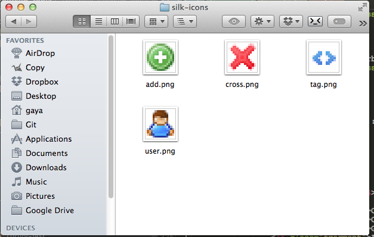

Front-end Development Automation
Improving the workflow
WordCamp NL, May 11th 2014
Gaya Kessler
Gaya Kessler
Senior Lead Web Developer Ninja
at Merchandise.nl
Blog: http://www.gayadesign.com
Slides: http://talk.gayadesign.com
Twitter: @gayadesign
Front-end Development
in a nutshell
HTML, CSS, images, JavaScript, other assets, optimization of assets, optimization for the browser, unit tests uitvoeren
There is a change in our source
here we go again...
optimization of assets, optimization for the browser, unit tests uitvoeren
But wait! The project just scaled!
CSS is not manageable.
JavaScript is a pile of junk.
Optimization is time expensive.
There is hope
CSS Preprocessors
Bring logic to your CSS
$ gem install sass
Variables
Sass
$header-color: #666;
$body-color: #333;
body {
color: $body-color;
}
h1, h2, h3, h4 {
color: $header-color;
}
CSS
body {
color: #333;
}
h1, h2, h3, h4 {
color: #666;
}
Nesting
.header {
ul {
margin: 0px;
li {
padding: 0px;
font: {
family: 'Open Sans', sans-serif;
size: 21pt;
}
&:hover {
background: #666;
}
}
}
}
.header ul {
margin: 0px;
}
.header ul li {
padding: 0px;
font-family: 'Open Sans', sans-serif;
font-size: 21pt;
}
.header ul li:hover {
background: #666;
}
Partials & Imports
/* _settings.scss, _layout.scss */
@import "settings";
@import "layout";
body {
background-color: $body-color;
color: $body-text;
}
Mixins
Sass
@mixin fix-for-ie6($display) {
display: $display;
}
header {
@include fix-for-ie6(none);
}
CSS
header {
display: none;
}
Extending / Inheritance
Sass
.button {
border-radius: 2px;
background: #eee;
color: #420;
}
.submit {
@extend .button;
}
.next {
@extend .button;
}
CSS
.button, .submit, .next {
border-radius: 2px;
background: #eee;
color: #420;
}
Great with BEM and OOCSS
HTML
<element class="block--modifier">
<element class="block__element" />
</element>
Sass
.block {
position:relative;
width: 50px;
&__element {
position:absolute;
}
&--modifier {
@extend .block;
width: 100px;
height: 10px;
}
}
Great with BEM and OOCSS
CSS
.block, .block--modifier {
position: relative;
width: 50px;
}
.block__element {
position: absolute;
}
.block--modifier {
width: 100px;
height: 10px;
}
But wait... there is more!
$ gem install compass
Just a small config.rb
relative_assets = true
css_dir = "css"
sass_dir = "sass"
images_dir = "images"
output_style = :expanded # After dev :compressed
line_comments = true
preferred_syntax = :scss
Some great things
- CSS3 prefixes
- Color calculation
- Getting image dimension
- Assets' relative URLs
- Maintaining a Vertical Rhytmn
- Sprites
A Tale of Sprites
Sass
@import "compass/utilities/sprites";
@import "silk-icons/*.png";
.add-button {
@include silk-icons-sprite("add");
}
CSS
.silk-icons-sprite, .add-button {
background: url('../images/silk-icons-sfbf7044fd4.png') no-repeat;
}
.add-button {
background-position: 0 -16px;
}
"But it takes so much time and effort to learn."
NOPE!
Task Runners
forget about the repetitive tasks
Create a list of tasks you need
- Concatinate JavaScript source files
- Run JSHint
- Run Unittests
- Remove console.log debugging. Fucking IE...
- Uglify the generated outcome
When will these tasks be needed?
-
In development: (when hitting "save")
- Concatinate JavaScript source files
- JSHint
- Run Unittests
-
At build:
- All development tasks
- Remove console.log debugging
- Uglify the generated outcome
This can all be automated?
Yes. Easily.
Step 1: Install NodeJS
Step 2: Install Grunt CLI
$ npm install -g grunt-cli
What does NPM do?
package.json
{
"name": "project-name",
"version": "1.3.37",
"description": "An example project!",
"main": "",
"scripts": {
"test": "grunt test"
},
"author": "Gaya Kessler",
"license": "MIT",
"devDependencies": {
"grunt": "~0.4.2"
}
}
Adding Grunt as a dependency of your project
$ npm install grunt --save-dev
Find Grunt plugins
We need
- Watch changes on source files > grunt-contrib-watch
- Concatinate source > grunt-contrib-concat
- JSHint > grunt-contrib-jshint
- Unittesting > grunt-contrib-qunit
- Console.log removing > grunt-remove-logging
- Uglification > grunt-contrib-uglify
Front-ender's webserver
- Use 'connect' to run middleware with NodeJS
- Websockets
- Livereload
- Serving static mockup data
What's next?

What can Yeoman do for me?
- Project scaffolding
- Removes the effort of creating new projects
- It automates automatisation
Yeoman generator example
- Create vagrant box for testing.
- Gruntfile with all dev and build tasks.
- Basic Sass setup with libs and mixins.
- Latest version of platform you're working with.
- No more config hell, it works.
Thank you for listening!
Any questions?
Blog: http://www.gayadesign.com
Slides: http://talk.gayadesign.com
Twitter: @gayadesign